| Alloy Electrum Ingot |
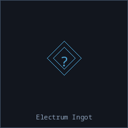 Electrum Ingot ×2 |
Gold Ore ×2, Silver Ore ×3 |
6 ticks |
Ore Refinement 2 |
| Assemble Power Battery |
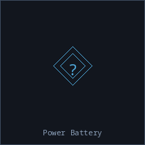 Power Battery |
Cobalt Ore ×2, Lithium Ore ×3 |
4 ticks |
Ore Refinement 2 |
| Assemble Quantum Stabilizer |
 Quantum Stabilizer Quantum Stabilizer |
Circuit Board ×2, Processed Null Matter ×1 |
10 ticks |
Ore Refinement 5 |
| Attune Phase Matrix |
Phase Matrix |
Energy Crystal ×1, Phase Crystal ×2 |
6 ticks |
Ore Refinement 4 |
| Basic Copper Processing |
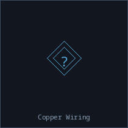 Copper Wiring |
Copper Ore ×8 |
3 ticks |
None |
| Basic Iron Smelting |
 Steel Plate Steel Plate |
Iron Ore ×10 |
3 ticks |
None |
| Basic Silicon Refinement |
 Flex Polymer Flex Polymer |
Nickel Ore ×4, Silicon Ore ×8 |
3 ticks |
None |
| Build Universal Nav Core |
 Universal Nav Core Universal Nav Core |
Circuit Board ×1, Condensed Dark Matter ×1, Trade Cipher ×1 |
10 ticks |
Ore Refinement 5 |
| Chlorine Circuit Etching |
 Circuit Board ×3 Circuit Board ×3 |
Chlorine Compound ×1, Silicon Ore ×2 |
4 ticks |
Basic Crafting 3, Gas Processing 5 |
| Compress Synthetic Diamond |
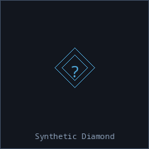 Synthetic Diamond |
Carbon Ore ×8, Energy Crystal ×1 |
8 ticks |
Ore Refinement 5 |
| Concentrate Thorium |
Thorium Concentrate ×2 |
Thorium Ore ×6 |
8 ticks |
Ore Refinement 2, Radioactive Handling 1 |
| Concentrate Uranium |
Uranium Concentrate ×2 |
Uranium Ore ×6 |
8 ticks |
Ore Refinement 2, Radioactive Handling 1 |
| Condense Dark Matter |
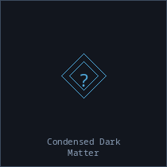 Condensed Dark Matter |
Dark Matter Residue ×2, Durasteel Plate ×1 |
10 ticks |
Ore Refinement 5 |
| Condense Void Essence |
Void Condensate |
Energy Crystal ×1, Void Essence ×3 |
8 ticks |
Ore Refinement 5 |
| Convert to UF6 |
Uranium Hexafluoride |
Fluorine Gas ×2, Uranium Concentrate ×4 |
12 ticks |
Ore Refinement 4, Radioactive Handling 3 |
| Create Ceramite Plating |
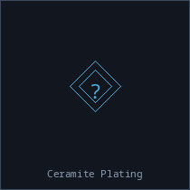 Ceramite Plating ×2 |
Silicon Ore ×4, Titanium Alloy ×2, Titanium Ore ×2 |
8 ticks |
Basic Crafting 4, Ore Refinement 4 |
| Create Silver Superconductor |
 Superconductor Superconductor |
Iridium Ore ×1, Palladium Ore ×2, Silver Wiring ×2 |
10 ticks |
Ore Refinement 5, Shield Crafting 2 |
| Create Superconductor |
Superconductor |
Copper Wiring ×3, Iridium Ore ×1, Palladium Ore ×2 |
10 ticks |
Ore Refinement 5, Shield Crafting 2 |
| Crystallize Exotic Matter |
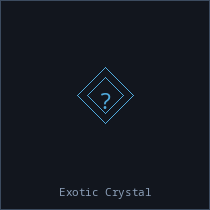 Exotic Crystal |
Exotic Matter ×3, Focused Crystal ×1, Silicate Composite ×1 |
10 ticks |
Advanced Crafting 3, Ore Refinement 5 |
| Crystallize Void Essence |
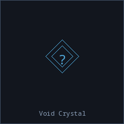 Void Crystal |
Focused Crystal ×1, Void Condensate ×2 |
10 ticks |
Ore Refinement 5 |
| Cultivate Alien Spores |
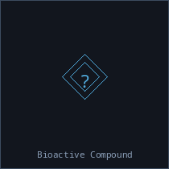 Bioactive Compound ×2 |
Alien Spores ×5, Purified Water ×2 |
8 ticks |
Biological Processing 3, Ore Refinement 2 |
| Draw Gold Wire |
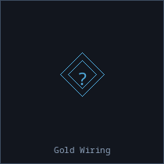 Gold Wiring |
Gold Ore ×4 |
4 ticks |
Ore Refinement 2 |
| Draw Silver Wire |
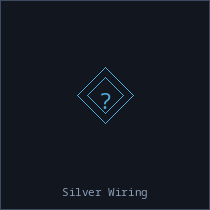 Silver Wiring |
Silver Ore ×4 |
3 ticks |
Ore Refinement 1 |
| Draw Tungsten Rod |
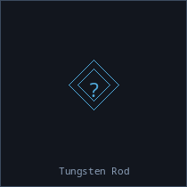 Tungsten Rod |
Tungsten Ore ×4 |
5 ticks |
Ore Refinement 3 |
| Enrich Uranium |
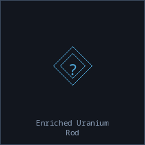 Enriched Uranium Rod |
Liquid Nitrogen ×2, Uranium Ore ×8 |
15 ticks |
Ore Refinement 6, Radioactive Handling 4 |
| Enrich Uranium (High) |
Highly Enriched Uranium |
Low-Enriched Uranium ×3 |
20 ticks |
Ore Refinement 8, Radioactive Handling 7 |
| Enrich Uranium (Low) |
Low-Enriched Uranium |
Liquid Nitrogen ×2, Uranium Hexafluoride ×2 |
15 ticks |
Ore Refinement 6, Radioactive Handling 5 |
| Exfoliate Graphene |
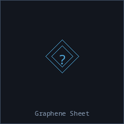 Graphene Sheet |
Carbon Ore ×6 |
5 ticks |
Ore Refinement 3 |
| Extract Neural Compounds |
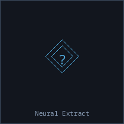 Neural Extract |
Circuit Board ×3, Energy Crystal ×1, Optical Fiber Bundle ×1 |
12 ticks |
Advanced Crafting 4 |
| Extrude Nanoplastic |
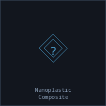 Nanoplastic Composite ×3 |
Carbon Ore ×2, Flex Polymer ×4 |
6 ticks |
Basic Crafting 3, Ore Refinement 3 |
| Fabricate Circuit Boards |
Circuit Board ×2 |
Copper Ore ×3, Energy Crystal ×1, Silicon Ore ×2 |
3 ticks |
Basic Crafting 2 |
| Fabricate Enriched Uranium Rod |
Enriched Uranium Rod |
Low-Enriched Uranium ×2 |
14 ticks |
Ore Refinement 6, Radioactive Handling 5 |
| Fabricate Fusion Fuel Rod |
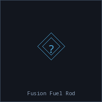 Fusion Fuel Rod |
Liquid Tritium ×2, Processed Thorium ×1, Thorium Fuel Rod ×1, Uranium Ore ×2 |
12 ticks |
Ore Refinement 5, Radioactive Handling 4 |
| Fabricate Reactor Fuel Assembly |
Reactor Fuel Assembly |
Low-Enriched Uranium ×2, Thorium Fuel Rod ×1 |
18 ticks |
Ore Refinement 7, Radioactive Handling 6 |
| Fabricate Silver Circuit Boards |
Circuit Board ×2 |
Energy Crystal ×1, Silicon Ore ×2, Silver Wiring ×2 |
3 ticks |
Basic Crafting 2 |
| Fabricate Thorium Fuel Rod |
Thorium Fuel Rod |
Processed Thorium ×2 |
14 ticks |
Ore Refinement 6, Radioactive Handling 5 |
| Fire Thermal Ceramic |
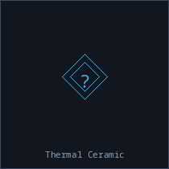 Thermal Ceramic |
Aluminum Ore ×4, Silicon Ore ×2 |
4 ticks |
Ore Refinement 2 |
| Fluorine Nano-Etch Circuits |
Circuit Board ×5 |
Fluorine Etchant ×1, Silicon Ore ×2 |
6 ticks |
Advanced Crafting 4, Gas Processing 9 |
| Focus Energy Crystal |
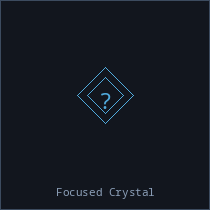 Focused Crystal |
Energy Crystal ×4, Palladium Ore ×1 |
8 ticks |
Basic Crafting 3, Ore Refinement 4 |
| Forge Adamantite |
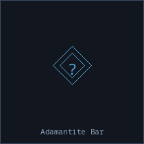 Adamantite Bar |
Adamantite Ore ×5, Exotic Crystal ×2, Neutronium Ingot ×1 |
45 ticks |
Advanced Crafting 7, Ore Refinement 9 |
| Forge Darksteel Plating |
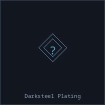 Darksteel Plating |
Darksteel Ore ×2 |
8 ticks |
Ore Refinement 4 |
| Forge Durasteel |
 Durasteel Plate ×2 Durasteel Plate ×2 |
Steel Plate ×4, Tungsten Ore ×2, Vanadium Ore ×1 |
10 ticks |
Advanced Crafting 3, Ore Refinement 5 |
| Forge Fury-Tempered Plating |
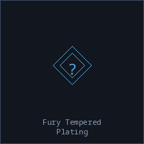 Fury-Tempered Plating |
Fury Alloy ×1, Steel Plate ×2 |
10 ticks |
Ore Refinement 5 |
| Forge Solarian Composite |
 Solarian Composite Solarian Composite |
Sol Alloy Ore ×3, Steel Plate ×2 |
10 ticks |
Ore Refinement 5 |
| Forge Titanium Alloy |
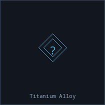 Titanium Alloy |
Steel Plate ×1, Titanium Ore ×3 |
5 ticks |
Ore Refinement 3 |
| Fuse Galactic Standard Alloy |
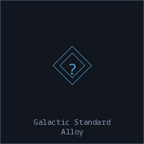 Galactic Standard Alloy |
Fury Alloy ×1, Solarian Composite ×1, Steel Plate ×2 |
10 ticks |
Ore Refinement 5 |
| Fuse Reinforced Glass |
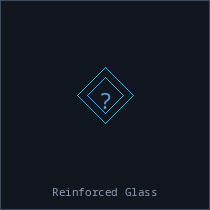 Reinforced Glass |
Silicon Ore ×5 |
3 ticks |
Ore Refinement 1 |
| Generate Antimatter |
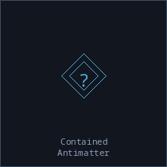 Contained Antimatter |
Antimatter Containment Cell ×10, Liquid Hydrogen ×10, Power Core ×3, Superconductor ×2 |
60 ticks |
Advanced Crafting 7, Ore Refinement 9, Radioactive Handling 7 |
| Grind Precision Optic |
 Precision Optic Precision Optic |
Reinforced Glass ×1, Solarian Composite ×1 |
10 ticks |
Ore Refinement 5 |
| Grow Crystalline Lattice |
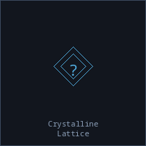 Crystalline Lattice |
Focused Crystal ×3, Silicon Ore ×5, Synthetic Compound ×2 |
20 ticks |
Advanced Crafting 4, Ore Refinement 6 |
| Grow Quantum Dot Matrix |
Quantum Dot Matrix |
Gold Wiring ×1, Quantum Fragments ×2 |
6 ticks |
Ore Refinement 4 |
| Onboard Alloy Synthesis |
Titanium Alloy |
Iron Ore ×2, Titanium Ore ×3 |
0 ticks |
None |
| Polish Nebula Prism Lens |
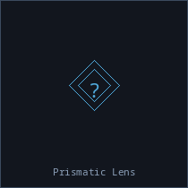 Prismatic Lens |
Focused Crystal ×2, Prismatic Nebulite ×3 |
10 ticks |
Ore Refinement 5 |
| Process Copper Wiring |
Copper Wiring ×2 |
Copper Ore ×4 |
2 ticks |
Ore Refinement 1 |
| Process Nebulium Core |
 Nebulium Core Nebulium Core |
Focused Crystal ×1, Nebulium ×3 |
10 ticks |
Advanced Crafting 3, Ore Refinement 6 |
| Process Null Matter |
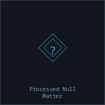 Processed Null Matter |
Null Matter ×2 |
8 ticks |
Ore Refinement 4 |
| Process Radium |
Radium Phosphor |
Radium Ore ×5 |
12 ticks |
Ore Refinement 3, Radioactive Handling 3 |
| Process Thorium |
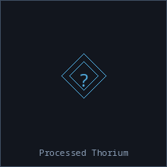 Processed Thorium ×2 |
Thorium Concentrate ×4, Thorium Ore ×6 |
12 ticks |
Ore Refinement 4, Radioactive Handling 3 |
| Process Tritium Ice |
Liquid Tritium ×2 |
Tritium Ice ×5 |
10 ticks |
Ore Refinement 3, Radioactive Handling 2 |
| Reclaim Steel from Scrap |
Steel Plate |
Salvage Metal ×8 |
4 ticks |
Salvaging 1 |
| Refine Solarian Legacy Ore |
Solarian Legacy Alloy |
Legacy Ore ×3, Steel Plate ×1 |
8 ticks |
Ore Refinement 5 |
| Refine Steel |
Steel Plate ×2 |
Iron Ore ×5 |
2 ticks |
Ore Refinement 1 |
| Refine Titanium |
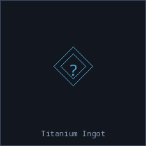 Titanium Ingot |
Titanium Ore ×5 |
4 ticks |
Ore Refinement 2 |
| Refine Weapons-Grade Plutonium |
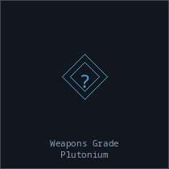 Weapons-Grade Plutonium |
Polonium Ore ×1, Reactor-Grade Plutonium ×1 |
25 ticks |
Ore Refinement 8, Radioactive Handling 8 |
| Roll Lead Sheet |
Lead Sheet ×2 |
Lead Ingot ×3 |
6 ticks |
Basic Crafting 2 |
| Seal Dark Matter Cell |
 Dark Matter Cell Dark Matter Cell |
Condensed Dark Matter ×1, Liquid Hydrogen ×1 |
10 ticks |
Ore Refinement 5 |
| Sinter Silicate Composite |
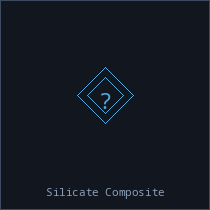 Silicate Composite |
Nickel Ore ×2, Silicon Ore ×4 |
4 ticks |
Ore Refinement 2 |
| Smelt Aluminum Sheet |
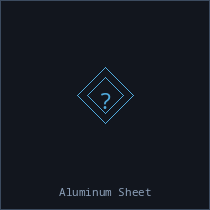 Aluminum Sheet ×2 |
Aluminum Ore ×5 |
3 ticks |
Ore Refinement 1 |
| Smelt Lead Ingot |
Lead Ingot ×2 |
Lead Ore ×4 |
5 ticks |
Basic Crafting 1 |
| Spin Optical Fiber |
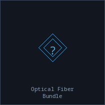 Optical Fiber Bundle |
Energy Crystal ×2, Silicon Ore ×3 |
5 ticks |
Ore Refinement 3 |
| Stabilize Exotic Matter |
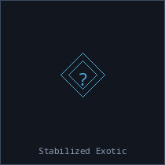 Stabilized Exotic |
Exotic Matter ×3, Focused Crystal ×2 |
15 ticks |
Advanced Crafting 3, Ore Refinement 7 |
| Synthesize Liquid Tritium |
Liquid Tritium ×2 |
Deuterium ×25, Reactor Fuel Assembly ×1 |
18 ticks |
Ore Refinement 6, Radioactive Handling 5 |
| Synthesize Metamaterial |
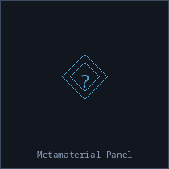 Metamaterial Panel |
Circuit Board ×3, Crystalline Lattice ×2, Exotic Crystal ×1 |
25 ticks |
Advanced Crafting 5, Ore Refinement 7 |
| Synthesize Neural Gel |
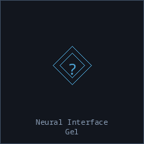 Neural Interface Gel |
Energy Crystal ×2, Optical Fiber Bundle ×1 |
5 ticks |
Advanced Crafting 2 |
| Synthesize Neutronium |
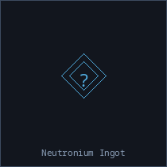 Neutronium Ingot |
Durasteel Plate ×3, Power Core ×2, Weapons-Grade Plutonium ×1 |
30 ticks |
Advanced Crafting 6, Ore Refinement 8, Radioactive Handling 4 |
| Synthesize Organic Compound |
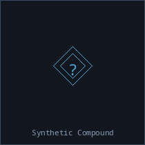 Synthetic Compound ×3 |
Purified Water ×1, Raw Organic Compound ×4 |
6 ticks |
None |
| Synthesize Pan-Galactic Matrix |
 Pan-Galactic Matrix Pan-Galactic Matrix |
Circuit Board ×1, Processed Null Matter ×1, Solarian Composite ×1, Trade Cipher ×1 |
10 ticks |
Ore Refinement 5 |
| Synthesize Polymer |
Flex Polymer ×3 |
Nickel Ore ×2, Silicon Ore ×3 |
2 ticks |
Ore Refinement 1 |
| Temper Crimson Fury Alloy |
Fury Alloy |
Fury Crystal ×3, Titanium Alloy ×1 |
10 ticks |
Ore Refinement 5 |
| Unwrap Enriched Uranium Rod |
Enriched Uranium Rod ×2 |
Contained Enriched Uranium Rod ×1 |
4 ticks |
Radioactive Handling 2 |
| Unwrap Highly Enriched Uranium |
Highly Enriched Uranium |
Contained Highly Enriched Uranium ×1 |
6 ticks |
Radioactive Handling 4 |
| Unwrap Liquid Tritium |
Liquid Tritium ×3 |
Contained Liquid Tritium ×1 |
3 ticks |
Radioactive Handling 1 |
| Unwrap Low Enriched Uranium |
Low-Enriched Uranium ×2 |
Contained Low Enriched Uranium ×1 |
4 ticks |
Radioactive Handling 2 |
| Unwrap Processed Thorium |
Processed Thorium ×3 |
Contained Processed Thorium ×1 |
3 ticks |
Radioactive Handling 1 |
| Unwrap Reactor Fuel Assembly |
Reactor Fuel Assembly |
Contained Reactor Fuel Assembly ×1 |
6 ticks |
Radioactive Handling 4 |
| Unwrap Reactor Grade Plutonium |
Reactor-Grade Plutonium |
Contained Reactor Grade Plutonium ×1 |
8 ticks |
Radioactive Handling 6 |
| Unwrap Thorium Fuel Rod |
Thorium Fuel Rod ×2 |
Contained Thorium Fuel Rod ×1 |
4 ticks |
Radioactive Handling 2 |
| Unwrap Uranium Hexafluoride |
Uranium Hexafluoride ×3 |
Contained Uranium Hexafluoride ×1 |
3 ticks |
Radioactive Handling 1 |
| Unwrap Weapons Grade Plutonium |
Weapons-Grade Plutonium |
Contained Weapons Grade Plutonium ×1 |
8 ticks |
Radioactive Handling 6 |
| Weave Void Shield Matrix |
 Void Shield Matrix Void Shield Matrix |
Focused Crystal ×1, Fury Alloy ×1, Processed Null Matter ×1 |
10 ticks |
Ore Refinement 5 |
| Wrap Enriched Uranium Rod |
Contained Enriched Uranium Rod |
Enriched Uranium Rod ×2, Hazmat Container ×1, Lead Sheet ×1 |
5 ticks |
Radioactive Handling 3 |
| Wrap Highly Enriched Uranium |
Contained Highly Enriched Uranium |
Hazmat Container ×1, Highly Enriched Uranium ×1, Lead Sheet ×2, Titanium Alloy ×1 |
8 ticks |
Radioactive Handling 5 |
| Wrap Liquid Tritium |
Contained Liquid Tritium |
Hazmat Container ×1, Liquid Tritium ×3 |
4 ticks |
Radioactive Handling 2 |
| Wrap Low Enriched Uranium |
Contained Low Enriched Uranium |
Hazmat Container ×1, Lead Sheet ×1, Low-Enriched Uranium ×2 |
5 ticks |
Radioactive Handling 3 |
| Wrap Processed Thorium |
Contained Processed Thorium |
Hazmat Container ×1, Processed Thorium ×3 |
4 ticks |
Radioactive Handling 2 |
| Wrap Reactor Fuel Assembly |
Contained Reactor Fuel Assembly |
Hazmat Container ×1, Lead Sheet ×2, Reactor Fuel Assembly ×1, Titanium Alloy ×1 |
8 ticks |
Radioactive Handling 5 |
| Wrap Reactor Grade Plutonium |
Contained Reactor Grade Plutonium |
Hazmat Container ×1, Lead Sheet ×3, Reactor-Grade Plutonium ×1, Titanium Alloy ×1 |
10 ticks |
Radioactive Handling 7 |
| Wrap Thorium Fuel Rod |
Contained Thorium Fuel Rod |
Hazmat Container ×1, Lead Sheet ×1, Thorium Fuel Rod ×2 |
5 ticks |
Radioactive Handling 3 |
| Wrap Uranium Hexafluoride |
Contained Uranium Hexafluoride |
Hazmat Container ×1, Uranium Hexafluoride ×3 |
4 ticks |
Radioactive Handling 2 |
| Wrap Weapons Grade Plutonium |
Contained Weapons Grade Plutonium |
Hazmat Container ×1, Lead Sheet ×3, Titanium Alloy ×1, Weapons-Grade Plutonium ×1 |
10 ticks |
Radioactive Handling 7 |